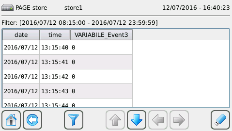
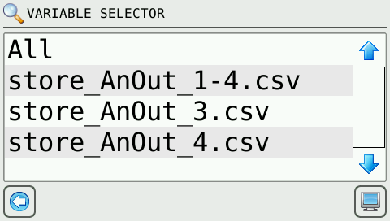

Das Panel speichert alle Größen, die sich auf Crosstable Variablen beziehen, und die im Feld “Update” den Wert gesetzt haben:
S: Die Variable wird immer aktualisiert und langsam mit einer Zeit “Slow Log Period” gespeichert (Parameter Systemeditor → System).
F: wie “S”", aber schnell und mit einer Zeit “Fast Log Period” (Parameter Systemeditor → System).
V: Die Variable wird nur bei einer Änderung erfasst und historisiert.
X: Die Variable wird beim Aufruf durch die logShot() Funktion historisiert.
Der Protokollmechanismus kann mit den Funktionen gestartet, gestoppt und beliebig erzwungen werden. logStart();, logStop(); e logShot();. Die Funktion logReset(); löscht alle Logs auf dem Gerät. Diese Funktionen werden wie im Kapitel “Realisierung einer Automatisierung” gezeigt in den gewünschten Code eingefügt.
Die erzeugte Historie ist täglich und ist für alle für diese Funktion aktivierten Mengen eindeutig. Eine neue Datei wird bei logStart(); (eine neue Datei wird automatisch um 00.00 Uhr erstellt.)
Um die Verlaufsseite anzuzeigen, können Sie eine ATCMbutton im Seitenwechselmodus verwenden und in der Eigenschaft “pageName” den Namen der Bibliotheksseite “store” einführen.

Die Schaltfläche ermöglicht das Filtern im Laufe der Zeit von Historikern, während die Schaltfläche , die beim Einstecken eines USB-Sticks aktiviert wird, es Ihnen ermöglicht, Daten auf den USB-Stick herunterzuladen.
Es ist möglich, eine Reihe von “Teilgeschichten” zu definieren, für die die Panelanzeige verfügbar ist.
Die neue Datei muss über die Webschnittstelle auf das Gerät hochgeladen werden, siehen Sie Kapitel “Funktionsweise der Webschnittstelle”. Optional können Sie eine Teilmenge der historisierten Variablen angeben, indem Sie auf diese Weise eine Konfigurationsdatei (store1.csv) schreiben:
date
time
TPLC_IN_3
TPLC_IN_AN_2
Um die Verlaufsseite anzuzeigen, wählen Sie MENU → DATA → STORE, alternativ können Sie eine ATCMbutton im Seitenwechselmodus verwenden und in der Eigenschaft “pageName” das Wort “Dateiname ” ohne Erweiterung eingeben. Wo “Dateiname” eine.csv-Datei ist, die mit “store” beginnen sollte.
